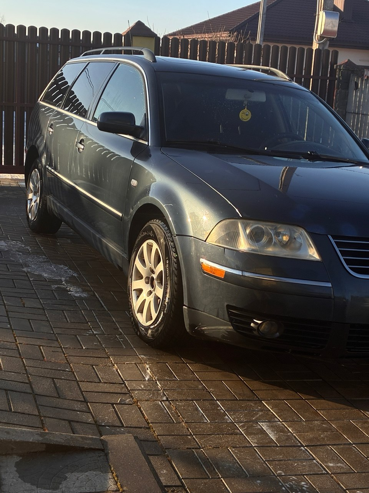
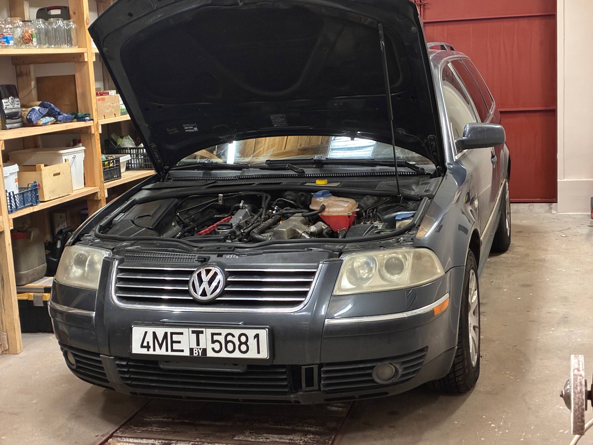
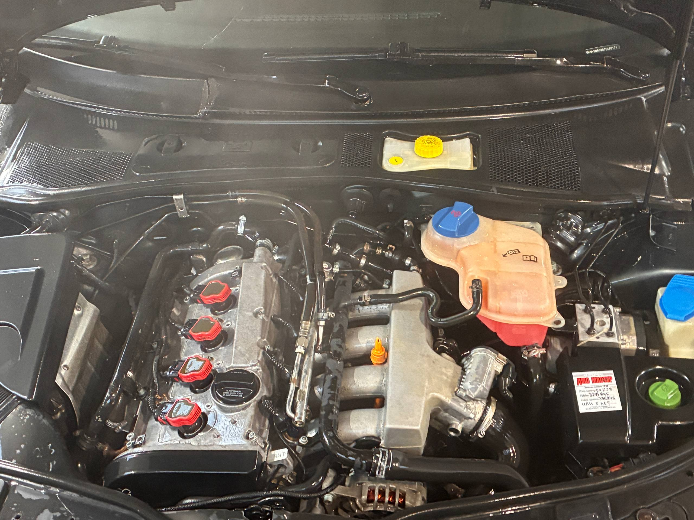
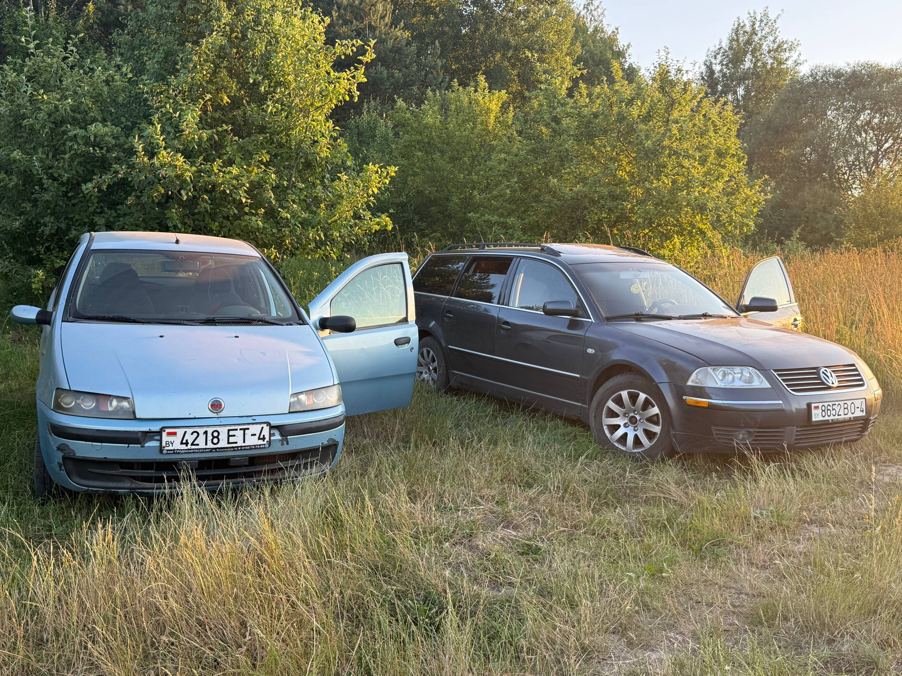

Мой автомобиль
На этой странице я расскажу немного о моем личном автомобиле, который спасет меня на протяжении года и остается незаменимой вещью в моей жизни. И конечно же он удостоен отдельной страничке на моем сайте
Здесь можно посмотреть его фото, характеристики и немного интересных фактов
Фотографии




Основные характеристики
| Характеристики | Значение |
|---|---|
| Марка | Volkswagen |
| Модель | Passat B5 Рестайлинг |
| Год выпуска | 2002 |
| Двигатель | AWM 1.8т |
| Мощность | 170 л.с |
| Тип топлива | Бензин |
| Коробка передач | Автомат, ZF Tiptronic, 5 передач |
| Привод | Передний |
| Тип наддува | Турбина |
Немного о машине
Моему Пассату уже больше двадцати лет, но он всё ещё остаётся интересной и приятной машиной. Это универсал, поэтому места в нём хватает как для пассажиров, так и для различных вещей.
Двигатель 1.8T мощностью 170 л.с. делает автомобиль достаточно динамичным, а турбонаддув добавляет ему характера и позволяет получать удовольствие от поездок.
Для меня Пассатик — это не просто автомобиль. Это машина, с которой связаны поездки, различные истории и обычные моменты, которые со временем становятся приятными воспоминаниями.
Полезная ссылка
Больше информации об автомобилях Volkswagen можно найти на официальном сайте Volkswagen .